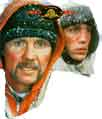

DVD Review Archive
Feature Archive Links DVD MIA DVD
Alerts Movie Posters Laser Site Info Home E-mail
© 2002 Films on Disc Stuart J. Kobak ALL RIGHTS RESERVED.
|
|
Chief amongst the joys of Say Anything is the
wonderfully sensitive, extraordinarily charming performance of John Cusack
as Lloyd Dobler, a high school everyman for anytime. He's a free-spirit,
but not entirely a flake; a young man searching for his identity, growing
up, coming of age, and true to his generous spirit. Director Cameron Crowe
does a great job win his directing debut. He finds a way to play Say
Anything in a very natural way. It's a clean treatment of teens coming
of age, and you have to appreciate the lack of affectation.
Crowe as scriptwriter is the director's best
friend. He delivers an unsentimental work. He could easily have caved to
typical feel-good treatment, but he chooses, bravely and sagely, to make
it an accurate portrayal of young love and that everlasting search for
identity. Dobler represents the character who is not really a
special talented human being, but he's just a nice guy, and he's a nice
guy from his core. He not a nice guy to get things, he has no ulterior
motives; he's a nice guy because that's the way he is. He's the unsung
hero of all these youth films. There are numerous special moments in Say
Anything. The dinner table scene when Lloyd Dobler is asked what he
wants to do with his life and the uncertainty of his response and the
short-term outlook are wonderfully true to life. Hell, what does a
seventeen or eighteen-year-old-kid know about life; he needs more
experience to know where he's going to go. Those of us that think we know
where we want to go, sometimes we get locked into the wrong places. Dopler
standing up to Mr. Court is another outstanding scene. The main characters
are very well drawn. Court's a very interesting character who provides a
number of surprises and levels to the film. And Crowe's view of Court is
complex and not judgmental. And it's complex in it's view of Court. If
anything is a little bit too cute it's probably Dobler's relationship with
his girl buddies. That plays strained at times, but it is
acceptable. |
Click on the DVD MIA symbol for profiles of DVDs missing
in action.  From an Akira Kurosawa screenplay. Jon Voight is fantastic as fierce habitual criminal Oscar "Manny" Mannheim. A smile to remember with ferocious non-stop action. |